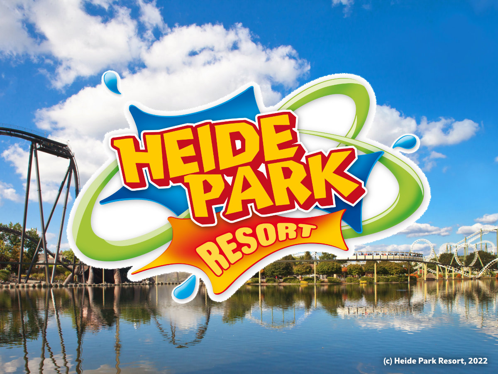

Willkommen!
Entdecken Sie spannende Attraktionen, Shows und unvergessliche Erlebnisse für die ganze Familie.

Über uns
Der Heide Park Resort in Soltau, Niedersachsen, wurde 1978 eröffnet und ist heute einer der bekanntesten Freizeitparks in Deutschland. Die Geschichte des Parks begann mit dem Wunsch, einen Freizeitpark zu schaffen, der sowohl familienfreundliche Attraktionen als auch aufregende Fahrgeschäfte bietet. Zunächst unter dem Namen „Heide Park“ eröffnet, hat der Park seit seiner Gründung zahlreiche Erweiterungen und Themenbereiche erlebt, um sein Angebot ständig zu verbessern und neue Besucher anzulocken. Heute ist der Park Teil der internationalen Betreibergruppe Merlin Entertainments, die ihn kontinuierlich weiterentwickelt. Der Heide Park ist für seine Vielfalt an Attraktionen bekannt. Zu den bekanntesten Fahrgeschäften gehört die Achterbahn „Colossos“, die als eine der höchsten und schnellsten Holzachterbahnen Europas gilt. Mit einer Höhe von 60 Metern und einer maximalen Geschwindigkeit von 110 km/h bietet „Colossos“ ein aufregendes Erlebnis für Thrill-Seeker. Ein weiteres Highlight ist die „Krake“, eine der wenigen Dive Coaster in Europa, bei der Fahrgäste aus großer Höhe in einen freien Fall stürzen. Für Familien gibt es zahlreiche Attraktionen wie die „Bounty“, eine klassische Schiffsschaukel, oder den „Big Loop“, eine Eisenbahn-Achterbahn, die besonders für jüngere Besucher geeignet ist. Im Bereich der Wasserattraktionen sorgt die „Wildwasserbahn“ für eine erfrischende Abkühlung. Neben den Fahrgeschäften bietet der Park auch regelmäßige Shows, Veranstaltungen und thematische Erlebnisse, die das gesamte Jahr über für Unterhaltung sorgen. Außerdem ist der Park in verschiedenen Themenbereichen aufgeteilt. Dazu gehören „Exploria“, „Bucht der Piraten“, „Land der Vergessenen“ , „Transilvanien“, „Peppa Pig Land“ und „Wild wild West“. Durch diese Themenbereiche wird der Heide Park viel übersichtlicher und abenteuerlicher. Mit einer stetig wachsenden Anzahl an Attraktionen und einem abwechslungsreichen Angebot an Shows und Events ist der Heide Park Resort ein beliebtes Ziel für Familien und Abenteuerlustige aus ganz Europa.
Unsere Attraktionen
Parkplan
Planen Sie Ihren Besuch mit unserem interaktiven Parkplan! Klicken Sie auf den Button unten, um den Parkplan zu sehen.
Zum ParkplanPreise
| Kategorie | Preis | Details |
|---|---|---|
| Erwachsene | 49€ | Gültig für Besucher ab 12 Jahren |
| Kinder (bis 11 Jahre) | 39€ | Ermäßigte Preise für Kinder |
| Familienpaket | 120€ | 2 Erwachsene + 2 Kinder |
Sichern Sie sich jetzt Ihr Ticket und sparen Sie Zeit! Klicken Sie auf den Button unten, um Tickets zu kaufen.
Jetzt Ticket kaufenKontakt
Adresse: Heide Park Resort, 29614 Soltau, Deutschland
Telefon: +49 123 456789
Email: info@heidepark.de